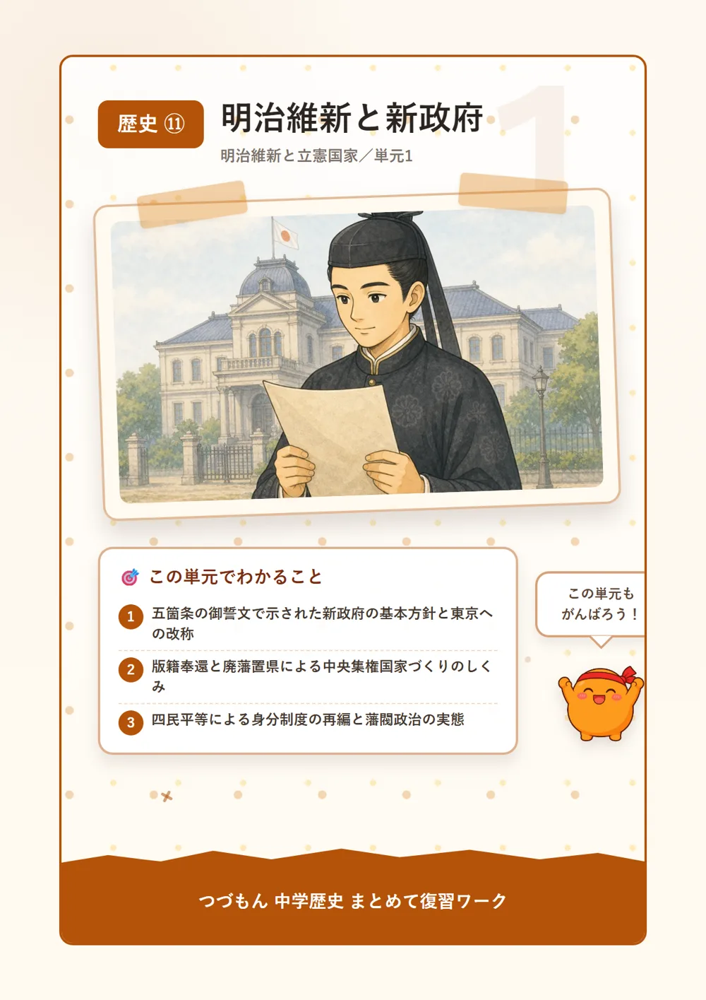
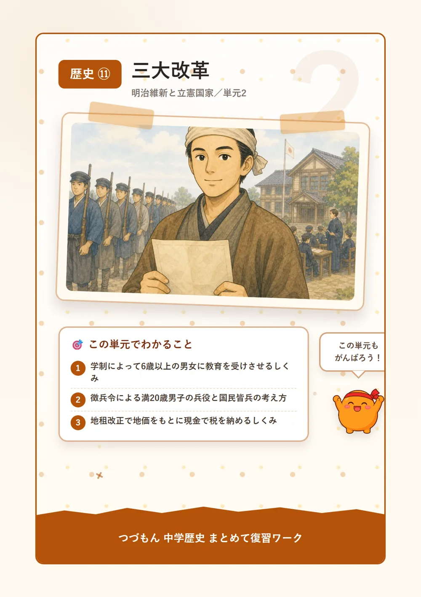
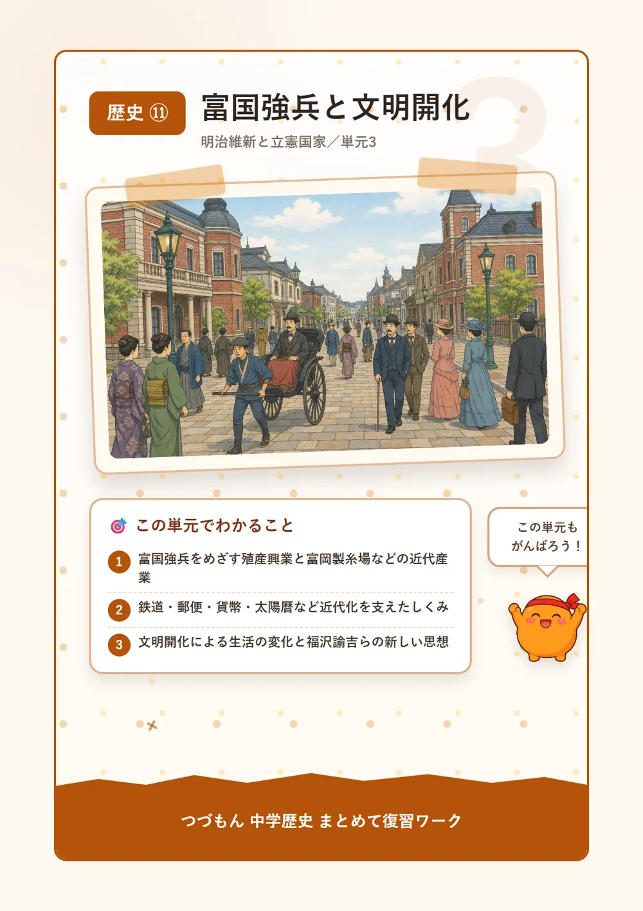
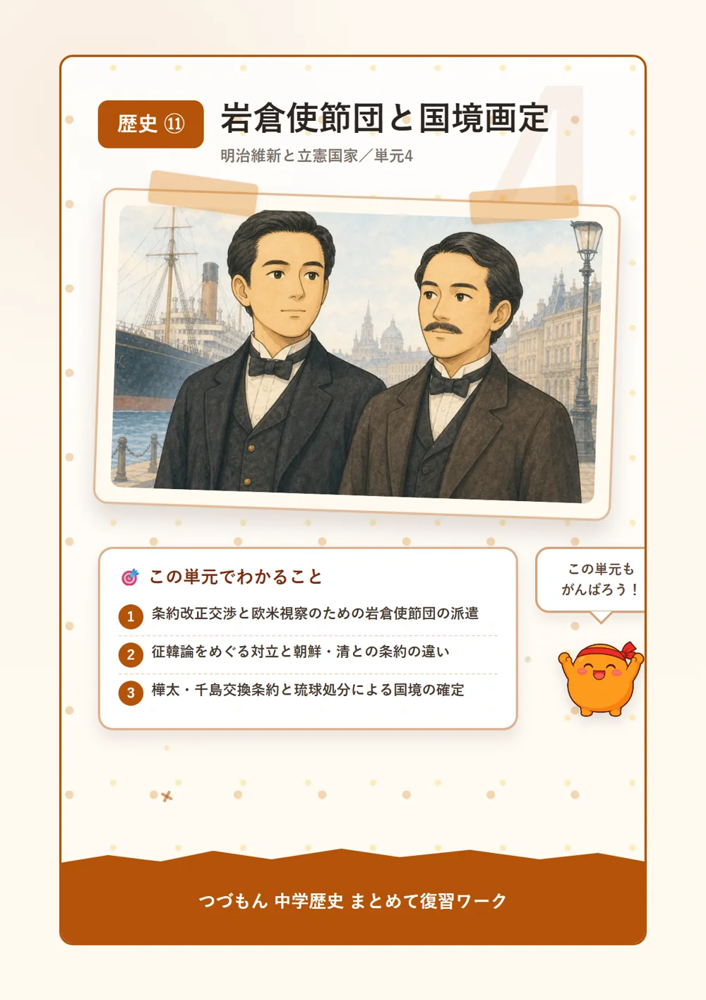
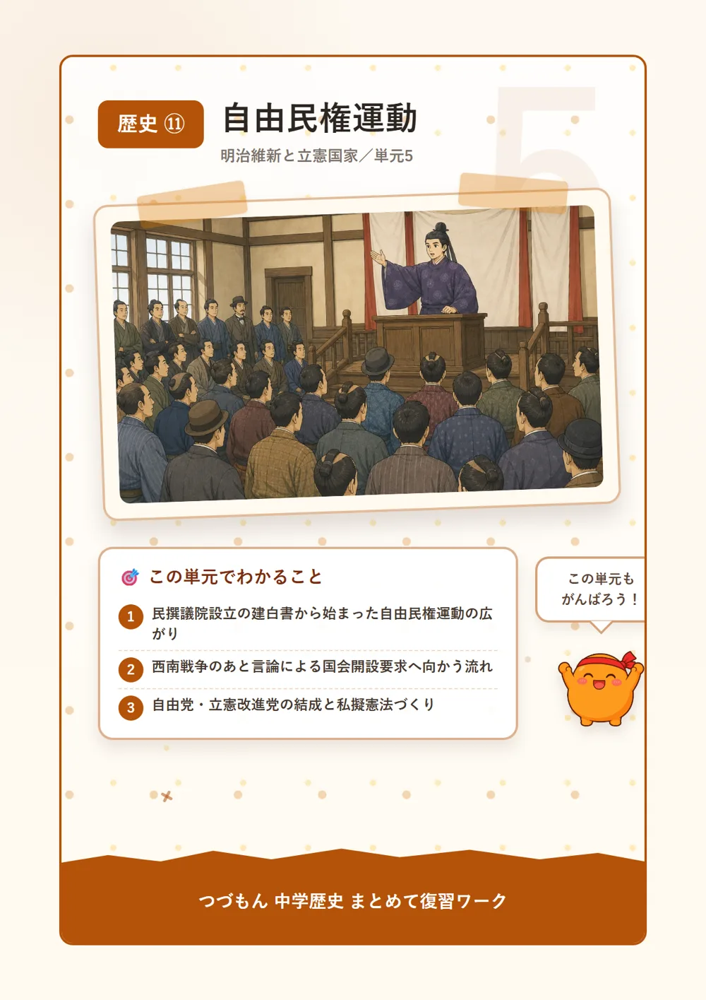
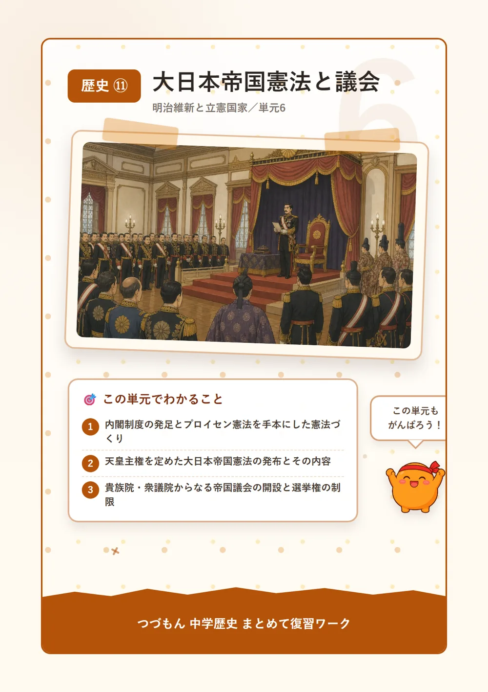

明治維新と立憲国家

明治維新と新政府

1五箇条の御誓文と東京
1868年、明治天皇は公家や大名たちを集めて、新しい国づくりの方針を示したんだ。それが五箇条の御誓文だよ。「広く会議を開いてみんなの意見を聞こう」「これまでの古い習わしにとらわれないようにしよう」など、新政府の目指す方向がここに書かれているんだ。同じ1868年、江戸という町の名前も東京に変わって、翌年には天皇も京都からそこへ移り住んだんだよ。名前が変わるって、なんだか大きな一歩だと思わない?
2版籍奉還と廃藩置県
新政府がまず目指したのは、力を中央に集める中央集権の国づくりだったんだ。1869年、薩摩・長州・土佐・肥前(薩長土肥)の藩主たちが率先して、自分の土地と人民を朝廷に返す版籍奉還を行ったよ。でもこれだけでは藩の力は残ったまま。そこで1871年、政府は思い切って全国の藩をすべて廃止し、代わりに府県を置く廃藩置県を断行したんだ。中央から県令という役人が派遣されて、ようやく政府が全国をまとめて治められるようになったんだよ。
3四民平等と藩閥政治
江戸時代の士農工商という身分のしくみも見直されたよ。公家や大名は華族、武士は士族、農工商は平民とされ、職業や結婚の自由も認められる四民平等が進められたんだ。1871年にはえた・ひにんと呼ばれた人々を平民とする解放令も出されたけれど、残念ながら差別は根強く残ってしまったんだ。一方で、新政府の重要なポストは薩摩・長州など特定の藩の出身者ばかりが占める藩閥政治になっていて、これがのちに国民から強く批判されることになるんだよ。

三大改革

1学制と教育の広がり
1872年、政府はフランスの制度を参考に学制を出して、6歳以上のすべての男女に教育を受けさせることを目指したんだ。全国に小学校がどんどん作られていったけれど、実は授業料を家庭が負担しなければならなくて、それが重荷になった農家も多かったんだよ。せっかく学校ができても、通わせるのは簡単じゃなかったんだね。
2徴兵令と国民皆兵
1873年には徴兵令が定められて、満20歳の男子に兵役の義務が課されたんだ。士族でも平民でも関係なく兵役を負うという国民皆兵の考え方が実現したんだよ。ところが、徴兵を説明する文書に出てきた「血税」という言葉を、本当に血を取られると勘違いした農民たちが、各地で血税一揆を起こしてしまったんだ。今では想像もつかない誤解だけど、当時の人にとっては切実だったんだね。
3地租改正と土地の税
同じ1873年、税金の集め方も大きく変わったよ。それまでの米で納める方法をやめて、土地の価格である地価の3%を現金で納めさせる地租改正が始まったんだ。土地の所有を証明する地券も発行されて、誰が税を納めるかがはっきりしたんだよ。これで政府の収入は米の出来や値段に左右されず安定したけれど、農民の負担は重く、各地で地租改正反対一揆が起こったんだ。その結果、1877年には税率が2.5%に引き下げられたんだよ。
富国強兵と文明開化

1富国強兵と殖産興業
明治政府は欧米列強に対抗するため、富国強兵というスローガンを掲げたんだ。国を豊かにして軍隊も強くする、そのための土台として近代産業を育てる殖産興業政策が進められたよ。群馬県には官営模範工場の代表である富岡製糸場が建てられて、フランスの技術で生糸を生産し、民間の工場の手本になったんだ。政府がまず自分でやってみせて、そのやり方を広めていったんだね。
2鉄道・郵便・貨幣の近代化
1872年には新橋・横浜間に鉄道が開通して、人やものが速く運べるようになったんだ。前島密が整備した郵便制度や、新貨条例による円・銭・厘という統一貨幣も、近代化を支える大切なしくみだったよ。さらに1873年には欧米にならって太陽暦も採用されたんだ。暮らしの土台となる仕組みが、次々と西洋式に変わっていったんだね。
3文明開化と新しい思想
都市では欧米の文化や生活様式が広まる文明開化が進んで、ガス灯がともり、牛鍋を食べる新しい習慣も生まれたんだ。ちょんまげ頭からザンギリ頭へ、着物から洋服へ——見た目もどんどん変わっていったんだよ。思想の面では「学問のすゝめ」で人間の平等と学問の大切さを説いた福沢諭吉や、ルソーの思想を紹介して「東洋のルソー」と呼ばれた中江兆民が、多くの人に大きな影響を与えたんだ。
岩倉使節団と国境画定

1岩倉使節団の派遣
1871年、岩倉具視を大使に、大久保利通・木戸孝允・伊藤博文らを伴った岩倉使節団が欧米に派遣されたんだ。目的は条約改正の交渉と、欧米諸国のしくみを実際に見て学ぶことだったよ。約2年間という長い旅で、政府の中心メンバーがまとめて国を離れるなんて、今ではちょっと考えられないよね。この間、日本に残った西郷隆盛たちが留守政府を預かっていたんだ。
2征韓論と朝鮮・清との関係
1871年、日本は清との間で互いの独立を尊重する対等な条約、日清修好条規を結んだよ。一方、朝鮮に対しては1873年、武力で開国を迫ろうとする征韓論が政府内で議論されたんだ。でも帰国した岩倉具視や大久保利通らがこれに反対して否決し、西郷隆盛や板垣退助らは政府を去ることになったんだよ。1875年には江華島事件が起こり、翌1876年、日本は朝鮮にとって不平等な日朝修好条規を結ばせたんだ。
3国境の確定と沖縄
1875年、日本はロシアと樺太・千島交換条約を結んで、樺太を手放す代わりに千島列島すべてを日本領としたんだ。これで北の国境がはっきり決まったんだよ。北海道には開拓と防備を兼ねる屯田兵が送られたんだ。そして1879年、琉球処分によって琉球藩は廃止され沖縄県が置かれ、日本の領域が南でも確定していったんだよ。
自由民権運動

1自由民権運動のはじまり
1874年、板垣退助らは国会を開くことを求める民撰議院設立の建白書を政府に提出したんだ。これがきっかけとなって、藩閥政治を批判し国民の権利拡大を求める自由民権運動が広がっていったんだよ。「自分たちにも政治に参加させてほしい」という声が、少しずつ全国に広まっていったんだね。
2西南戦争とその後の広がり
1877年、西郷隆盛を中心とする士族最大の反乱西南戦争が起きたけれど、徴兵令で集められた政府軍に敗れてしまったんだ。これ以降、武力ではなく言論によって国会開設を求める動きが広がっていくよ。1880年には全国の代表が集まる国会期成同盟が結成され、政府はこれに押されて1881年に国会開設の詔を出し、10年後の国会開設を約束したんだ。
3政党の結成と憲法草案
1881年、板垣退助はフランス流の思想をもとに自由党を結成したんだ。翌1882年には大隈重信がイギリス流の議会政治を理想とする立憲改進党を結成したよ。どちらも国会開設を見すえた政党だったけれど、目指す政治のかたちには違いがあったんだね。運動の高まりの中で、民間でも独自の憲法草案である私擬憲法が数多く作られたんだよ。
大日本帝国憲法と議会

1内閣制度と憲法づくり
1885年、それまでの太政官制に代わって内閣制度が発足し、伊藤博文が初代内閣総理大臣となったんだ。伊藤はドイツ(プロイセン)の憲法を学びに行っていて、君主の権限が強いその仕組みを手本にしたんだよ。天皇の力をしっかり残したい明治政府にとって、プロイセン憲法はぴったりのお手本だったんだね。こうして憲法づくりが進められていったよ。
2大日本帝国憲法の発布
1889年、天皇主権を定めた大日本帝国憲法が発布されたんだ。この憲法は天皇が国民に与える形の欽定憲法で、主権は天皇にあり、国民は臣民と呼ばれて、その権利は法律の範囲内で認められるにとどまったんだよ。今の私たちの憲法とはずいぶん違う仕組みだったんだね。
3帝国議会の誕生
1890年には帝国議会が開かれたんだ。皇族・華族や天皇が任命する議員からなる貴族院と、選挙で選ばれた議員からなる衆議院の二院制がとられたよ。ただし衆議院の選挙権は、直接国税15円以上を納める満25歳以上の男子に限られていて、有権者は全人口のごくわずかにすぎなかったんだ。同じ年には道徳教育の基本方針を示す教育勅語も出されたんだよ。